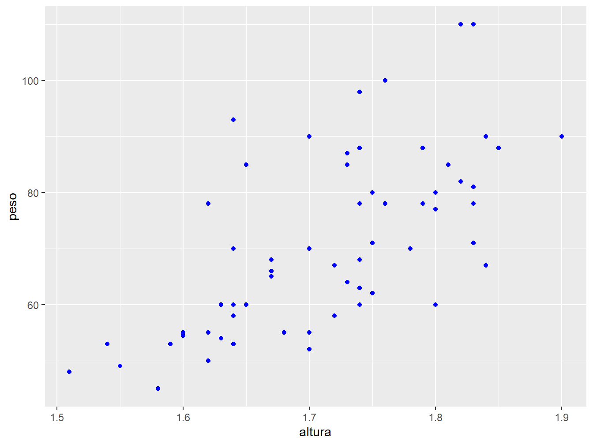
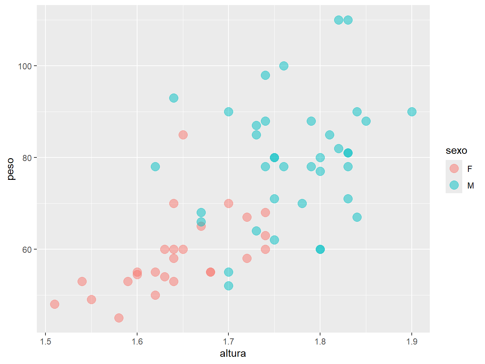
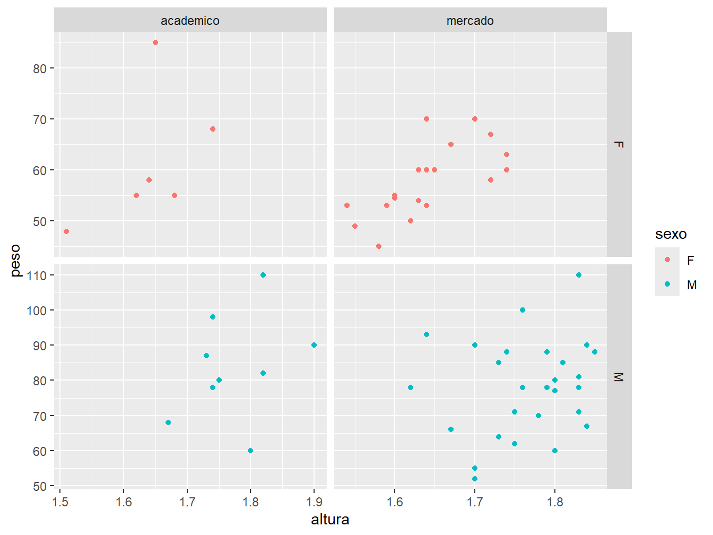
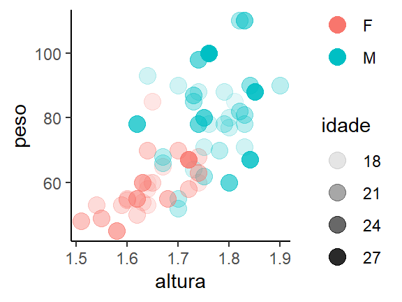
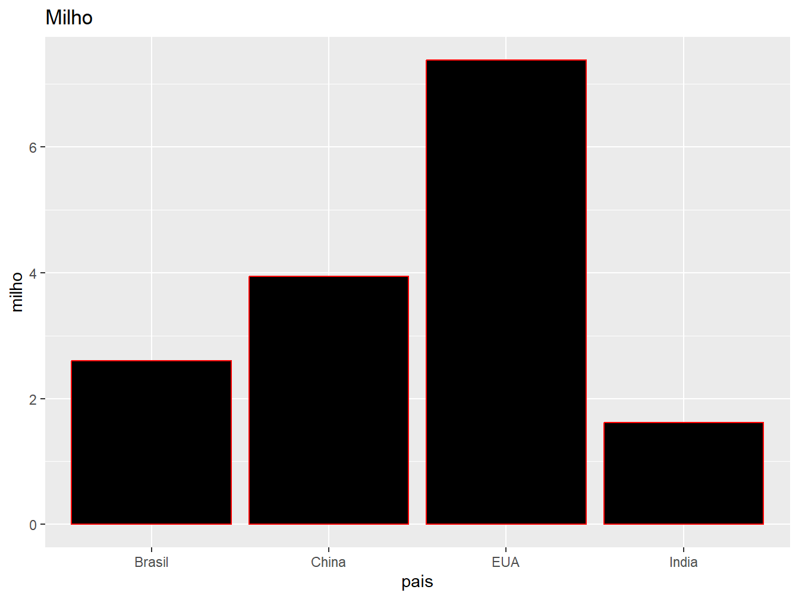
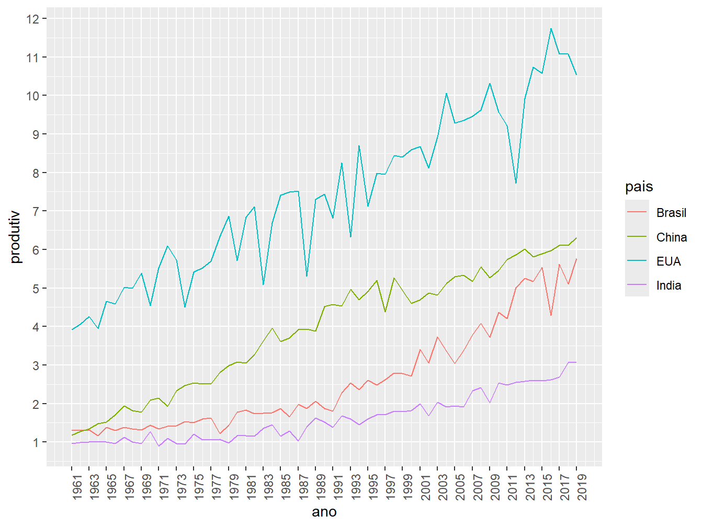

9 Gráficos
9.1 Introdução
Neste capítulo, trataremos sobre a visualização de dados. Esta é uma etapa importante tanto para enxergar informações relevantes em nossos dados, como para apresentar os resultados obtidos. Para isso, utilizaremos os recursos disponíveis no pacote ggplot2.
O ggplot2 foi idealizado por Hadley Wickham, sendo documentado no trabalho intitulado A Layered Grammar of Graphics. Desde então, tornou-se um dos pacotes mais populares para a confecção de gráficos elegantes e versáteis, tendo como base a gramática de gráficos.
O conceito de gramática de gráficos foi proposto, originalmente, no livro The Grammar of Graphics, por Leland Wilkinson em 2005. Sua lógica se assemelha à gramática linguística na qual, para formularmos uma frase inteligível, devemos seguir uma ordem coerente de palavras. De modo semelhante, para construirmos gráficos a partir do ggplot2, devemos ter em mente quais são os seus fundamentos gramaticais.
Basicamente, a gramática de gráficos é composta por sete camadas, podendo, ou não, estar todas juntas em um só gráfico. A sua construção varia de acordo com o tipo de gráfico, além da necessidade e subjetividade do cientista de dados.

Fonte: The Grammar of Graphics, 2005.
A Figura 9.2 ilustra as camadas que compõem a lógica da gramática de gráficos, apresentando as seguintes características:
Dados (Data): indica o conjunto de dados utilizado para a confecção do gráfico. É importante ter noção sobre os tipos de variáveis que o compõe (quantitativas ou qualitativas), a fim de utilizá-las de maneira correta;
Estéticas (Aesthetics): atributo em que definimos quais variáveis irão compor os eixos dos gráficos, além da distinção das observações por cor, formato e tamanho a partir de uma outra variável;
Geometrias (Geometries): representação geométrica do gráfico, seja em pontos, linhas, barras, caixas, dentre outras;
Painel (Facets): é a forma de exibição dos gráficos de acordo com uma variável categórica. Podemos dividir em múltiplas grades ou, simplesmente, de forma individualizada;
Estatísticas (Statistics): são os elementos estatísticos de um conjunto de dados que compõem o gráfico, como por exemplo uma média ou uma linha de tendência;
Coordenadas (Coordinates): onde definimos as dimensões e a ordenação das coordenadas do gráfico;
Tema (Theme): aqui definimos a estética do gráfico, como as cores, tamanhos, fonte do texto, formatações e legendas.
Portanto, a essência do ggplot2 é construir um gráfico camada por camada. A seguir, veremos as aplicações desses conceitos, além de entender a lógica da gramática de gráficos. Portanto, vamos carregar o pacote ggplot2.
Dada a ampla gama de recursos oferecidos pelo ggplot2, não será possível abranger todas as suas funções e opções neste material. No entanto, o que será apresentado permitirá ao leitor compreender a lógica por trás do pacote, proporcionando uma maior autonomia para a continuidade nos estudos.
Nos exemplos a seguir, utilizaremos alguns conjuntos de dados que podem ser acessados clicando aqui.
9.2 Gráfico de Dispersão
Começaremos a explorar os recursos do ggplot2 com o gráfico de dispersão, ou gráfico de ponto. Esse tipo de gráfico é muito útil para verificar a tendência entre duas variáveis numéricas que podem assumir uma ampla gama de valores (variáveis quantitativas contínuas).
Para tanto, utilizaremos os dados do arquivo alunos.csv.
dados_alunos <- readr::read_csv("dados/alunos.csv")
dados_alunos
#> # A tibble: 64 × 7
#> sexo idade altura peso horas_estudo media_ponderada futuro
#> <chr> <dbl> <dbl> <dbl> <dbl> <dbl> <chr>
#> 1 M 23 1.75 80 2 7.5 academico
#> 2 F 19 1.67 65 2 8.3 mercado
#> 3 M 19 1.7 90 3 6.9 mercado
#> 4 M 22 1.73 87 3 7.1 academico
#> 5 M 19 1.83 71 2 6.5 mercado
#> 6 M 19 1.8 80 3 8.6 mercado
#> 7 M 20 1.9 90 2 7.8 academico
#> 8 F 20 1.6 55 1 8 mercado
#> 9 F 24 1.62 55 2 8.2 academico
#> 10 F 18 1.64 60 2 7.3 mercado
#> # ℹ 54 more rowsO conjunto de dados possui sete variáveis sobre alunos: sexo, idade, altura (em metros), peso (em kg), horas de estudo (por dia), média ponderada no curso e perspectiva futura após a graduação. Cada linha representa uma observação referente a um aluno, tendo no total, 64 observações (ou alunos). Com isso, podemos constatar que os dados estão no formato tidy data (vide Capítulo 5).
Neste primeiro momento, utilizaremos as variáveis altura e peso para construir o gráfico de dispersão.
ggplot(
data = dados_alunos,
mapping = aes(x = altura, y = peso)
) +
geom_point()
Para construir qualquer gráfico com o pacote ggplot2, começamos com a função ggplot(). Em seguida, a função apresenta as seguintes camadas:
data =: recebe um objeto que contém o conjunto de dados a ser utilizado para construir o gráfico. No caso, utilizamos odados_alunos;mapping = aes(): define os atributos, bem como as variáveis que irão compor o gráfico. Com a funçãoaes(), atribuímos as variáveisalturaepesoaos eixos x e y, respectivamente;geom_point(): determina o tipo de geometria adotado no gráfico. No caso, utilizamos a geometria de pontos, que resulta em um gráfico de dispersão.
Dentro da função ggplot(), declaramos as camadas referente aos dados e a estética. Em seguida, com a geom_point(), definimos a geometria do gráfico. Note que ambas as funções são unidas pelo sinal de +.
Portanto, um gráfico do ggplot2 sempre terá a função ggplot() combinada com uma função de sintaxe geom_(), ligas pelo sinal +.
Outra forma de escrever o código anterior, é não declarando explicitamente os argumentos data = e mapping =, porém mantendo a ordem original dos atributos: primeiro os dados, depois a aes().
ggplot(dados_alunos, aes(x = altura, y = peso)) +
geom_point()Isso permite deixar o código mais enxuto, sendo importante, principalmente, quando utilizamos muitas linhas de código para fazer um único gráfico.
Nos primeiros exemplos deste material, utilizaremos os argumentos de forma explícita, para que você enxergue com mais clareza a estrutura e as funcionalidades do código. Posteriormente, utilizaremos implicitamente estes argumentos.
9.2.1 Gramática de gráficos
Para se ter uma noção de como foi gerado o gráfico anterior e entender melhor a lógica da gramática de gráficos, construiremos o código anterior por partes.
ggplot(data = dados_alunos)
Ao definir somente o argumento data = dados_alunos na função ggplot(), nos é retornado um gráfico vazio, pois apenas indicamos qual o conjunto de dados que utilizaremos, sem fornecer informações referentes à estrutura do gráfico.

Agora, indicando as variáveis mapeadas nos eixos x e y, temos um gráfico com as coordenadas definidas, porém, sem ter os dados projetados, pois ainda não definimos qual o tipo de geometria será adotado.
ggplot(
data = dados_alunos,
mapping = aes(x = altura, y = peso)
) +
geom_point()
Assim, ao definir a geometria de pontos geom_point(), os dados são inseridos no gráfico.
Dessa forma, para os que estão começando a utilizar e entender o ggplot2, recomendo executar os comandos camada por camada, pois auxiliará na compreensão da montagem dos gráficos.
9.2.2 Cores
Podemos incluir outros elementos ao gráfico anterior, como por exemplo, distinguir os pontos por cor, de acordo com uma variável do conjunto de dados.
ggplot(
data = dados_alunos,
mapping = aes(x = altura, y = peso, color = sexo)
) +
geom_point()Para isso, utilizamos o argumento color = dentro da aes(). No exemplo, diferenciamos por cor o sexo dos alunos.
Para atribuir uma única cor a todos os pontos, independente de uma variável, utilizamos o mesmo argumento dentro da geom_point().
ggplot(
data = dados_alunos,
mapping = aes(x = altura, y = peso)
) +
geom_point(color = "blue")
Você deve ter percebido que um mesmo argumento pode ser utilizado de diferentes maneiras. Nos exemplos anteriores, utilizamos o argumento color = dentro da função aes(), mas também na geom_point() sem a aes().
Utilizamos a aes() quando o argumento recebe uma variável do conjunto de dados, como foi o caso da color = sexo. Por outro lado, quando o argumento recebe um atributo contido em uma determinada escala, colocamos na função geom_() sem a aes().
Por exemplo, caso definirmos um atributo ao argumento color = dentro da função aes(), temos o seguinte resultado.
ggplot(
data = dados_alunos,
mapping = aes(x = altura, y = peso, color = "blue")
) +
geom_point()O comando aes(color = "blue") (cor = “azul”) nos retornou pontos de coloração vermelha, e não azul. Isto aconteceu pois a função aes() espera receber uma variável do conjunto de dados. Dessa forma, o valor "blue" é tratado como uma nova variável pertencente a todas as observações. Assim, os pontos são todos coloridos de vermelho (padrão do ggplot2) associada à nova categoria blue.
Portanto, sempre devemos nos atentar a esses detalhes para construirmos os gráficos de acordo com os nossos objetivos e as particularidades dos argumentos e funções.
Trataremos com mais detalhes sobre as cores na Seção 9.5.1.
9.2.3 Formatos
Podemos atribuir um novo formato aos pontos utilizando o argumento shape =.
Para alterar a forma de todos os pontos, independente de qualquer variável, colocamos o argumento dentro da função geom_point().
ggplot(
data = dados_alunos,
mapping = aes(x = altura, y = peso, color = sexo)
) +
geom_point(shape = 0)Cada tipo de formato é representado por um número, cujas legendas estão representadas na Figura 9.3.
shape =.
Da mesma forma que distinguimos os pontos por cor baseado em uma variável, podemos diferenciá-los pelo formato. Agora, utilizaremos o argumento shape = dentro da aes(), pois se trata de uma variável do nosso conjunto de dados.
ggplot(
data = dados_alunos,
mapping = aes(x = altura, y = peso, shape = sexo)
) +
geom_point()Para alterar o formato dos pontos, utilizamos a função scale_shape_manual() junto ao argumento values =, que recebe um vetor com os números dos formatos que se deseja atribuir.
ggplot(
data = dados_alunos,
mapping = aes(x = altura, y = peso, shape = sexo)
) +
geom_point() +
scale_shape_manual(values = c(13, 24))Perceba que inserimos a função logo abaixo da geom_point(), ligada pelo sinal de +, pois se trata de uma nova camada que altera o tema do gráfico.
Além disso, a sequência dos números no vetor segue a ordem das variáveis, ou seja, o formato 13 é referente ao sexo feminino (F) e o formato 24, ao sexo masculino (M).
9.2.4 Tamanho
Para alterar o tamanho dos pontos, utilizamos o argumento size =.
ggplot(
data = dados_alunos,
mapping = aes(x = altura, y = peso, color = sexo)
) +
geom_point(size = 5)Caso o argumento size = não seja especificado, por padrão, o valor adotado é igual a 1. Assim, podemos gerar ponto maiores designando valores superiores a 1, ou senão, pontos menores, atribuindo valores inferiores a 1.
Outra possibilidade é diferenciar as idades dos alunos pelo tamanho dos pontos. Para isso, o argumento size = receberá a variável idade, dentro a função aes().
ggplot(
data = dados_alunos,
mapping = aes(x = altura, y = peso, color = sexo, size = idade)
) +
geom_point()Para alterar a escala de tamanho dos pontos, podemos utilizar a função scale_size(), onde colocamos no argumento range = um vetor com a amplitude de tamanhos, do menor para o maior.
ggplot(
data = dados_alunos,
mapping = aes(x = altura, y = peso, color = sexo, size = idade)
) +
geom_point() +
scale_size(range = c(1,10))
9.2.5 Transparência
Para modificar a transparência dos pontos, utilizamos o argumento alpha =.
ggplot(
data = dados_alunos,
mapping = aes(x = altura, y = peso, color = sexo)
) +
geom_point(size = 4, alpha = 0.5)
Este argumento segue uma escala de 0 a 1, sendo 0 o valor com máxima transparência (ou seja, os pontos desaparecem do gráfico).
Com o argumento shape =, também podemos diferenciar as observações pela transparência dos pontos, baseada em uma variável. Utilizaremos a variável idade para diferenciá-las.
ggplot(
data = dados_alunos,
mapping = aes(x = altura, y = peso, color = sexo, alpha = idade)
) +
geom_point(size = 4)Uma opção para alterar a escala de transparência é a função scale_alpha(). Junto ao argumento range =, colocamos uma amplitude de valores, de 0 a 1, do menor para o maior.
ggplot(
data = dados_alunos,
mapping = aes(x = altura, y = peso, color = sexo, alpha = idade)
) +
geom_point(size = 4) +
scale_alpha(range = c(0.4, 1))9.2.6 Painel (Facets)
Os paineis (facets) replicam os gráficos, separando-os em grades de acordo com uma variável categórica do conjunto de dados. Para ficar mais claro, vamos exemplificá-los com a função facet_wrap().
ggplot(
data = dados_alunos,
mapping = aes(x = altura, y = peso, color = sexo)
) +
geom_point() +
facet_wrap(~sexo)
Na função, utilizamos o operador ~ para dizer que a variável sexo será utilizada como um fator para quebrar o gráfico em duas grades (~sexo). Dessa maneira, cada grade recebe somente os dados referentes aos respectivos sexos.
Podemos alterar a disposição das grades no gráfico. Para isso, utilizamos o argumento nrow = ou ncol =, dentro da função facet_wrap(), para indicar a quantidade de linhas ou colunas a serem adotadas, respectivamente.
# Gráfico à esquerda
ggplot(
data = dados_alunos,
mapping = aes(x = altura, y = peso, color = sexo)
) +
geom_point() +
facet_wrap(~sexo, nrow = 2)
# Gráfico à direita
ggplot(
data = dados_alunos,
mapping = aes(x = altura, y = peso, color = sexo)
) +
geom_point() +
facet_wrap(~sexo, ncol = 2)
No gráfico à esquerda, definimos a disposição das grades em duas linhas (nrow = 2). Enquanto isso, no gráfico à direita, definimos a apresentação em duas colunas (ncol = 2).
Ainda, podemos associar duas variáveis categóricas ao painel. Como exemplo, adicionaremos a variável futuro à fórmula (futuro~sexo).
ggplot(
data = dados_alunos,
mapping = aes(x = altura, y = peso, color = sexo)
) +
geom_point() +
facet_wrap(futuro~sexo, ncol = 2)Outra maneira de utilizar os paineis é com a função facet_grid(). Ela apresenta o mesmo raciocínio da facet_wrap().
ggplot(
data = dados_alunos,
mapping = aes(x = altura, y = peso, color = sexo)
) +
geom_point() +
facet_grid(sexo~futuro)Com a função facet_grid(), delimitamos uma variável às colunas e outra variável às linhas, sendo uma opção mais adequada quando utilizamos mais de uma variável categórica para separar os dados em grades.
Por padrão, os paineis compartilham a mesma escala de coordenadas. Para ajustar as escalas conforme os dados presentes em cada grade, utilizamos o argumento scales =. Para tornar todas as escalas ajustadas aos dados, tanto no eixo x, como no eixo y, utilizamos o parâmetro "free". Para ajustar somente um dos eixos, utilizamos o "free_x" ou o "free_y".
# Gráfico à esquerda
ggplot(
data = dados_alunos,
mapping = aes(x = altura, y = peso, color = sexo)
) +
geom_point() +
facet_grid(sexo~futuro, scales = "free_y")
# Gráfico à direita
ggplot(
data = dados_alunos,
mapping = aes(x = altura, y = peso, color = sexo)
) +
geom_point() +
facet_grid(sexo~futuro, scales = "free_x")
# Gráfico abaixo
ggplot(
data = dados_alunos,
mapping = aes(x = altura, y = peso, color = sexo)
) +
geom_point() +
facet_grid(sexo~futuro, scales = "free")
9.2.7 Linhas de referência
Podemos adicionar linhas de referência aos nossos gráficos.
Para criar linhas horizontais, utilizamos a função geom_hline(). Como argumento, devemos usar a yintercept =, que indica em qual ponto do eixo y será traçada a linha.
Como exemplo, será construído um gráfico de dispersão entre as horas de estudo e a média ponderada dos estudantes. A linha de referência horizontal será a média (mean()) da média ponderada dos alunos.
ggplot(
data = dados_alunos,
mapping = aes(x = horas_estudo, y = media_ponderada)
) +
geom_point() +
geom_hline(
mapping = aes(yintercept = mean(media_ponderada)),
color = "red"
)Perceba que o argumento yintercept = foi colocado dentro da aes(), referente à função geom_hline(), pois utilizamos uma variável do nosso conjunto de dados para construir a linha.
Já as linhas verticais de referência são análogas às linhas horizontais. Para isso, utilizamos a função geom_vline(), que recebe o argumento xintercept = para indicar em qual ponto do eixo x será traçada a linha.
Agora, a linha de referência vertical será a média das horas de estudo.
ggplot(
data = dados_alunos,
mapping = aes(x = horas_estudo, y = media_ponderada)
) +
geom_point() +
geom_vline(
mapping = aes(xintercept = mean(horas_estudo)),
color = "red"
)Na Seção 9.5 abordaremos com mais detalhes sobre os gráficos de linhas.
9.2.8 Linhas de regressão
Podemos incluir linhas de regressão ajustadas aos dados com a função geom_smooth().
Utilizaremos as variáveis altura e peso do nosso conjunto de dados para exemplificá-la.
ggplot(
data = dados_alunos,
mapping = aes(x = altura, y = peso)
) +
geom_point() +
geom_smooth()
#> `geom_smooth()` using method = 'loess' and formula = 'y ~ x'Por padrão, a geom_smooth() aplica o modelo loess (sigla de locally estimated scatterplot smoothing) aos dados. Para alterar o método, utilizamos o argumento method = na função geom_smooth(). No exemplo a seguir, definiremos o método "lm" (linear model), ou seja, um modelo linear.
ggplot(
data = dados_alunos,
mapping = aes(x = altura, y = peso)
) +
geom_point() +
geom_smooth(method = "lm")
#> `geom_smooth()` using formula = 'y ~ x'Perceba que a linha de tendência apresenta uma região sombreada em seu entorno. Essa região é o intervalo de confiança que, por padrão, adota 95% de confiança (0,95). Para alterar o nível do intervalo de confiança, utilizamos o argumento level =. A seguir, assumiremos 70% de nível de confiança (0.70).
ggplot(
data = dados_alunos,
mapping = aes(x = altura, y = peso)
) +
geom_point() +
geom_smooth(method = "lm", level = 0.70)
Para ocultar o intervalo de confiança do gráfico, utilizamos o argumento se = FALSE.
ggplot(
data = dados_alunos,
mapping = aes(x = altura, y = peso)
) +
geom_point() +
geom_smooth(method = "lm", se = FALSE)Também podemos fazer linhas de regressão para diferentes grupos, como por exemplo, construir uma linha de acordo com o sexo. Para isso, definimos a variável sexo no argumento color = dentro da função aes()
ggplot(
data = dados_alunos,
mapping = aes(x = altura, y = peso, color = sexo)
) +
geom_point() +
geom_smooth(method = "lm", se = FALSE)Para distinguir o sexo dos alunos por cor, porém fazer uma única linha de tendência para todas as observações, temos que definir tal atributo na camada desejada, ou seja, dentro de uma das geom_().
ggplot(
data = dados_alunos,
mapping = aes(x = altura, y = peso)
) +
geom_point(mapping = aes(color = sexo)) +
geom_smooth(method = "lm", se = FALSE)
Neste caso, deslocamos a color = sexo da função ggplot() para a geom_point(), pois queremos distinguir somente os pontos por cor e não a linha de tendência.
Dessa forma, quando utilizamos dois tipos de geometria, os atributos contidos na ggplot() serão em comum à ambas as funções de geometria. No exemplo, tanto a geom_point(), como a geom_smooth() adotam o argumento aes(x = altura, y = peso) para mapear os eixos.
Por outro lado, ao deslocar a color = sexo, exclusivamente, para dentro da geom_point(), definimos este atributo somente para esta geometria.
Para conhecer outros argumentos disponíveis na função geom_smooth(), acesse o link https://ggplot2.tidyverse.org/reference/geom_smooth.html. E para maiores detalhes sobre o assunto aplicado ao ggplot2, confira o capítulo 5, seções 5.6 a 5.9, do livro R Graphics Cookbook.
9.2.9 Títulos e rótulos
Para colocarmos títulos e rótulos nos gráficos, utilizaremos como exemplo as variáveis altura e peso do nosso conjunto de dados, diferenciando o sexo por cor e a idade pela transparência.
ggplot(
data = dados_alunos,
mapping = aes(x = altura, y = peso, color = sexo, alpha = idade)
) +
geom_point(size = 4)
Para inserir os títulos e rótulos, utilizamos a função labs(). Como argumentos, indicamos quais atributos desejamos (re)nomear. Atente-se ao fato de que as nomeações devem estar entre aspas.
ggplot(
data = dados_alunos,
mapping = aes(x = altura, y = peso, color = sexo, alpha = idade)
) +
geom_point(size = 4) +
labs(
x = "Altura (m)",
y = "Peso (kg)",
color = "Gênero",
alpha = "Idade (anos)",
title = "Gráfico de dispersão",
subtitle = "Altura x Peso",
caption = "Fonte: Disciplina Estatística Aplicada - ESALQ."
)Podemos adicionar mais alguns ajustes, como centralizar o título e subtítulo, ajustar a fonte à esquerda e colocar as legendas abaixo do gráfico.
ggplot(
data = dados_alunos,
mapping = aes(x = altura, y = peso, color = sexo, alpha = idade)
) +
geom_point(size = 4) +
labs(
x = "Altura (m)",
y = "Peso (kg)",
color = "Gênero",
alpha = "Idade (anos)",
title = "Gráfico de dispersão",
subtitle = "Altura x Peso",
caption = "Fonte: Disciplina Estatística Aplicada (2022)."
) +
theme(
plot.title = element_text(hjust = 0.5),
plot.subtitle = element_text(hjust = 0.5),
plot.caption = element_text(hjust = 0),
legend.position = "bottom"
)Para isso, conjuntamente à função theme(), utilizamos a element_text() para ajustar o posicionamento horizontal do título (plot.title =) e do subtítulo (plot.subtitle =), além da fonte (plot.caption =). O argumento hjust = apresenta uma escala de 0 a 1, sendo 0 o posicionamento mais à esquerda do gráfico. Assim, para centralizarmos os textos, definimos o ajuste na metade da escala (hjust = 0.5).
Ainda dentro da função theme(), utilizamos o argumento legend.position = "bottom" para colocar as legendas abaixo do gráfico. Para colocá-las acima, utilizamos o parâmetro "top" e para colocar à esquerda, o parâmetro "left". Para ocultar todas as legendas, utilizamos o "none".
Caso queira ocultar somente uma das legendas, utilizamos a função guides(), informando a variável cuja legenda se deseja ocultar.
ggplot(
data = dados_alunos,
mapping = aes(x = altura, y = peso, color = sexo, alpha = idade)
) +
geom_point(size = 4) +
labs(
x = "Altura (m)",
y = "Peso (kg)",
color = "Gênero",
alpha = "Idade (anos)",
title = "Gráfico de dispersão",
subtitle = "Altura x Peso",
caption = "Fonte: Disciplina Estatística Aplicada - ESALQ."
) +
theme(
plot.title = element_text(hjust = 0.5),
plot.subtitle = element_text(hjust = 0.5),
plot.caption = element_text(hjust = 0),
legend.position = "bottom"
) +
guides(alpha = "none")Nesse exemplo, ocultamos apenas a legenda do argumento alpha =, atribuindo o valor "none".
9.2.10 Temas
Existe a possibilidade de escolhermos outros temas para confeccionar nossos gráficos. Podemos criar temas a partir do zero ou senão utilizar temas pré-definidos com função de sintaxe theme_(). A seguir, demonstraremos alguns dos temas pré-configurados.
# Gráfico à esquerda superior
ggplot(
data = dados_alunos,
mapping = aes(x = altura, y = peso, color = sexo, alpha = idade)
) +
geom_point(size = 4) +
theme_bw()
# Gráfico à direita superior
ggplot(
data = dados_alunos,
mapping = aes(x = altura, y = peso, color = sexo, alpha = idade)
) +
geom_point(size = 4) +
theme_classic()
# Gráfico à esquerda inferior
ggplot(
data = dados_alunos,
mapping = aes(x = altura, y = peso, color = sexo, alpha = idade)
) +
geom_point(size = 4) +
theme_dark()
# Gráfico à diretira inferior
ggplot(
data = dados_alunos,
mapping = aes(x = altura, y = peso, color = sexo, alpha = idade)
) +
geom_point(size = 4) +
theme_minimal()

O pacote ggthemes é uma opção para ter acesso a outros temas pré-definidos, além de recursos adicionais para os gráficos do ggplot2. Para conhecer o pacote, faça sua instalação e acesse sua documentação.
Para saber mais sobre títulos, rótulos e aparência geral dos gráficos, confira os capítulos 9 e 10 do livro R Graphics Cookbook.
9.2.11 Salvar gráficos
Ao elaborar um gráfico no R, podemos exportá-lo, salvando em formato de imagem ou pdf. Para isso, utilizamos a função ggsave(). A função salvará o último gráfico gerado.
ggplot(
data = dados_alunos,
mapping = aes(x = altura, y = peso, color = sexo, alpha = idade)
) +
geom_point(size = 4) +
theme_classic()
ggsave(filename = "imagens/grafico-alunos.png")9.3 Gráfico de Barras
Para construir gráficos de barras, utilizamos a função geom_col(). Ao eixo x, definimos uma variável categórica, enquanto ao eixo y, uma variável quantitativa.
Para a elaboração dos exemplos, utilizaremos dados do arquivo milho_trigo.csv. O conjunto de dados apresenta valores da produtividade média anual, em toneladas por hectare, das culturas do milho e trigo, respectivos ao Brasil, China, Índia e Estado Unidos entre os anos de 1961 e 2019.
producao <- readr::read_csv("dados/milho-trigo.csv")
producao
#> # A tibble: 4 × 3
#> pais milho trigo
#> <chr> <dbl> <dbl>
#> 1 Brasil 2.6 1.52
#> 2 China 3.94 3.07
#> 3 India 1.62 2.08
#> 4 EUA 7.38 2.48A utilização da geom_col() é muito semelhante à geom_point(). Dentro da função ggplot(), definimos o conjunto de dados a ser utilizado, as variáveis que ocuparão as coordenadas x e y, além da geometria do gráfico.
# Gráfico à esquerda
ggplot(producao, aes(x = pais, y = trigo)) +
geom_col() +
labs(title = "Trigo")
# Gráfico à direita
ggplot(producao, aes(x = pais, y = milho)) +
geom_col() +
labs(title = "Milho")
9.3.1 Cores
Podemos colorir os gráficos de barras de duas formas. A primeira é com o argumento color =, que colore as bordas das colunas. A outra é com o argumento fill =, que preenche o interior da barra com cores.
# Gráfico à esquerda
ggplot(producao, aes(x = pais, y = trigo)) +
geom_col(color = "red") +
labs(title = "Trigo")
# Gráfico à direita
ggplot(data = producao, mapping = aes(x = pais, y = milho)) +
geom_col(fill = "red") +
labs(title = "Milho")
Para colorir as bordas e o interior da barra, utilizamos ambos os argumentos em conjunto.
# Gráfico à esquerda
ggplot(producao, aes(x = pais, y = trigo)) +
geom_col(color = "black", fill = "red") +
labs(title = "Trigo")
# Gráfico à direita
ggplot(producao, aes(x = pais, y = milho)) +
geom_col(color = "red", fill = "black") +
labs(title = "Milho")

Trataremos com mais detalhes sobre as cores na Seção 9.5.1.
9.3.2 Larguras e espessuras
Para alterar a largura das barras, utilizamos o argumento width =, que adota uma escala de 0 a 1, onde 1 representa a largura máxima sem espaçamento entre as barras. Já para modificar a espessura das bordas, recorremos ao argumento linewidth =.
# Gráfico à esquerda
ggplot(producao, aes(x = pais, y = trigo)) +
geom_col(fill = "blue", width = 0.3) +
labs(title = "Trigo")
# Gráfico à direita
ggplot(producao, aes(x = pais, y = milho)) +
geom_col(color = "red", linewidth = 2) +
labs(title = "Milho")
9.3.3 Ordenamento
Nos gráficos de barras em que as variáveis categóricas não seguem uma ordem específica (variáveis qualitativas nominais), podemos reorganizá-las com base em seus valores. Como exemplo, ordenaremos os países de acordo com a produção de milho e trigo.
# Gráfico à esquerda
producao |>
dplyr::mutate(pais = forcats::fct_reorder(pais, trigo)) |>
ggplot(aes(x = pais, y = trigo)) +
geom_col() +
labs(title = "Trigo")
# Gráfico à direita
producao |>
dplyr::mutate(pais = forcats::fct_reorder(pais, -milho)) |>
ggplot(aes(x = pais, y = milho)) +
geom_col() +
labs(title = "Milho")Para tanto, foi utilizada a função forcats::fct_reorder() (vide ?sec-forcats). Nela, declaramos como primeiro argumento a variável a ser reordenada, no caso, os países. Em seguida, definimos o critério de ordenação, utilizando a produção média de trigo para o gráfico à esquerda e de milho para o da direita. Por padrão, a função ordena os dados em ordem crescente. Para ordenar decrescentemente, incluímos um sinal de - antes do critério.
Nos exemplos anteriores, vimos como integrar a função ggplot() em uma pipeline (Seção 7.2). É importante notar que, ao definir o objeto contendo o conjunto de dados no início, não foi necessário colocá-lo dentro da ggplot(). Isso destaca a flexibilidade da sintaxe tidyverse e como podemos criar visualizações de dados de maneira versátil e eficiente.
9.3.4 Coordenadas
O sistema de coordenadas padrão do ggplot2 é o cartesiano, onde os eixo x e y atuam de maneira independente para determinar a localização de cada ponto. De maneira simples, podemos inverter os eixos x e y utilizando a função coord_flip(), assim, dispomos as barras no sentido horizontal.
# Gráfico à esquerda
ggplot(producao, aes(x = pais, y = trigo)) +
geom_col() +
labs(title = "Trigo") +
coord_flip()
# Gráfico à direita
ggplot(producao, aes(x = pais, y = milho)) +
geom_col() +
labs(title = "Milho") +
coord_flip()9.3.5 Legendas
Podemos adicionar legendas às nossas colunas adicionando uma nova camada com a função geom_text(). No exemplo a seguir, adicionaremos os valores de produção como legenda junto às colunas.
# Gráfico à esquerda
ggplot(producao, aes(x = pais, y = trigo)) +
geom_col() +
geom_text(aes(label = trigo), color = "white", vjust = 1.5) +
labs(title = "Trigo")
# Gráfico à direita
ggplot(producao, aes(x = pais, y = milho)) +
geom_col() +
geom_text(aes(label = milho), color = "white", vjust = 1.5) +
labs(title = "Milho")Utilizando o argumento label =, atribuímos os valores médios de produção para as variáveis milho e trigo como legendas das colunas. Enquanto isso, o vjust = é empregado para ajustar a posição vertical das legendas, tomando como referência o topo de cada barra, de maneira independente em relação às demais.
Nesse caso, faça os ajustes testando valores. Também é possível atribuir valores negativos, fazendo com que a legenda fique acima da barra.
9.3.6 Duas variáveis categóricas
Nos exemplos anteriores, ilustramos as produções de milho e trigo em gráficos separados. Contudo, temos a opção de juntá-las em um único. Para isso, utilizaremos duas variáveis categóricas para construir o gráfico, atribuindo os países ao eixo x e as culturas do milho e trigo às cores das barras.
producao
#> # A tibble: 4 × 3
#> pais milho trigo
#> <chr> <dbl> <dbl>
#> 1 Brasil 2.6 1.52
#> 2 China 3.94 3.07
#> 3 India 1.62 2.08
#> 4 EUA 7.38 2.48Ao analisar a disposição dos dados, nota-se que devemos realizar algumas alterações para que seja possível atribuir as culturas às cores das barras. No caso, devemos colocá-las como observações de uma nova coluna, bem como seus valores.
Para tanto, utilizaremos a função tidyr::pivot_longer() (vide Seção 5.4) para realizar essa operação.
producao_longer <- producao |>
tidyr::pivot_longer(
cols = c(milho, trigo),
names_to = "cultura",
values_to = "producao_media"
)
producao_longer
#> # A tibble: 8 × 3
#> pais cultura producao_media
#> <chr> <chr> <dbl>
#> 1 Brasil milho 2.6
#> 2 Brasil trigo 1.52
#> 3 China milho 3.94
#> 4 China trigo 3.07
#> 5 India milho 1.62
#> 6 India trigo 2.08
#> 7 EUA milho 7.38
#> 8 EUA trigo 2.48Agora, milho e trigo passaram a ser observações da variável cultura, e seus respectivos valores, da coluna producao_media.

Dessa forma, mantemos a variável qualitativa pais no eixo x, mas agora, os valores de produção média no eixo y e a variável categórica cultura colorindo as barras de acordo com a cultura.
Este é um caso em que precisamos abdicar do formato tidy data (Seção 5.3) para adequar os dados conforme nossos objetivos.
9.3.6.1 Posição das barras
Caso queira alterar a disposição das barras, podemos utilizar o argumento position = e especificar a posição desejada.
# Gráfico à esquerda
producao_longer |>
ggplot(aes(x = pais, y = producao_media, fill = cultura)) +
geom_col(position = "stack")
# Gráfico ao centro
producao_longer |>
ggplot(aes(x = pais, y = producao_media, fill = cultura)) +
geom_col(position = "dodge")
# Gráfico à direita
producao_longer |>
ggplot(aes(x = pais, y = producao_media, fill = cultura)) +
geom_col(position = "fill")Como opções de disposição das barras temos:
"stack": ilustrada pelo gráfico à esquerda. É a opção padrão do argumentoposition =. Essa disposição de barras representa os valores absolutos de produção média das culturas em apenas uma barra por país;"dodge": ilustrada pelo gráfico ao centro. Posição que aprepresenta os valores absolutos das culturas de um mesmo país em colunas separadas;"fill": ilustrada pelo gráfico à direita. Constrói barras proporcionais, com escala de 0 a 1, preenchendo-as com os valores relativos das produções de milho e trigo, de acordo com o país.
9.3.6.2 Legendas
Da mesma maneira como fizemos na Seção 9.3.5, adicionamos legendas às colunas com a função geom_text().
# Gráfico à esquerda
producao_longer |>
ggplot(aes(x = pais, y = producao_media, fill = cultura)) +
geom_col(position = "stack") +
geom_text(
mapping = aes(label = producao_media),
color = "white",
position = position_stack(0.9),
vjust = 1.5
)
# Gráfico ao centro
producao_longer |>
ggplot(aes(x = pais, y = producao_media, fill = cultura)) +
geom_col(position = "dodge") +
geom_text(
mapping = aes(label = producao_media),
color = "white",
position = position_dodge(0.9),
vjust = 1.5
)
# Gráfico à direita
producao_longer |>
ggplot(aes(x = pais, y = producao_media, fill = cultura)) +
geom_col(position = "fill") +
geom_text(
mapping = aes(label = producao_media),
color = "white",
position = position_fill(0.9),
vjust = 1.5
)Dependendo do tipo de disposição escolhido para a barra, utilizaremos uma função de sintaxe position_() no argumento position =. Essa função é utilizada para ajustar o posicionamento das legendas em cada setores da barra, levando em consideração o tipo de disposição, seja a stack (position_stack()), dodge (position_dodge()) ou fill (position_fill()).
No caso da position = "fill", que ilustra as frequências relativas, os valores das legendas são os absolutos. Para convertê-los em proporções, agruparemos os dados utilizando a group_by() com base nos países. Em seguida, com a função mutate(), criaremos a coluna producao_relativa que apresenta os valores relativos entre as culturas em cada país.
producao_prop <- producao_longer |>
dplyr::group_by(pais) |>
dplyr::mutate(producao_relativa = (producao_media / sum(producao_media)))
producao_prop
#> # A tibble: 8 × 4
#> # Groups: pais [4]
#> pais cultura producao_media producao_relativa
#> <chr> <chr> <dbl> <dbl>
#> 1 Brasil milho 2.6 0.631
#> 2 Brasil trigo 1.52 0.369
#> 3 China milho 3.94 0.562
#> 4 China trigo 3.07 0.438
#> 5 India milho 1.62 0.438
#> 6 India trigo 2.08 0.562
#> 7 EUA milho 7.38 0.748
#> 8 EUA trigo 2.48 0.252Dessa forma, no lugar da variável producao_media, utilizaremos a producao_relativa, presente no objeto chamado producao_prop.
ggplot(
producao_prop,
aes(x = pais, y = producao_relativa, fill = cultura)
) +
geom_col(position = "fill") +
geom_text(
mapping = aes(label = producao_relativa |> round(2)),
color = "white",
position = position_fill(0.9),
vjust = 1.5
)Note que, para arredondar os valores de produção relativa em duas casas decimais, utilizamos a função round() junto à um pipe, dentro de uma função do gráfico. Portanto, os conceitos vistos no Seção 7.2 também são aplicáveis em funções do ggplot2.
9.3.7 Contagens
Também podemos fazer gráficos de barras com a função geom_bar(). Ela constrói os gráficos a partir da contagem de valores presentes em uma variável categórica. Como exemplo, utilizaremos a base de dados diamonds, presente no prórprio pacote ggplot2.
diamonds
#> # A tibble: 53,940 × 10
#> carat cut color clarity depth table price x y z
#> <dbl> <ord> <ord> <ord> <dbl> <dbl> <int> <dbl> <dbl> <dbl>
#> 1 0.23 Ideal E SI2 61.5 55 326 3.95 3.98 2.43
#> 2 0.21 Premium E SI1 59.8 61 326 3.89 3.84 2.31
#> 3 0.23 Good E VS1 56.9 65 327 4.05 4.07 2.31
#> 4 0.29 Premium I VS2 62.4 58 334 4.2 4.23 2.63
#> 5 0.31 Good J SI2 63.3 58 335 4.34 4.35 2.75
#> 6 0.24 Very Good J VVS2 62.8 57 336 3.94 3.96 2.48
#> 7 0.24 Very Good I VVS1 62.3 57 336 3.95 3.98 2.47
#> 8 0.26 Very Good H SI1 61.9 55 337 4.07 4.11 2.53
#> 9 0.22 Fair E VS2 65.1 61 337 3.87 3.78 2.49
#> 10 0.23 Very Good H VS1 59.4 61 338 4 4.05 2.39
#> # ℹ 53,930 more rowsEsse conjunto de dados possui 53.940 observações e 10 variáveis sobre características de uma amostra de diamantes. Dessas variáveis, utilizaremos apenas a cut, que informa a qualidade de corte dos diamantes, sendo categorizadas em Fair, Good, Very Good, Premium e Ideal.
A seguir, faremos um gráfico de barras que conta a quantidade de diamantes que se encaixam em cada uma dessas categorias.
Perceba que foi preciso informar apenas a variável categórica cut ao eixo x, sendo o y construido, automaticamente, a partir da contagem dos diamantes que se encaixam nas respectivas categorias.
Para alterar os valores do eixo y de contagens para proporção, utilizamos a função after_stat(prop) no argumento y = e o argumento group = 1 para manter todas as barras pertencentes ao mesmo grupo, garantindo que o cálculo da proporção seja feito corretamente.
ggplot(diamonds, aes(x = cut, y = after_stat(prop), group = 1)) +
geom_bar()9.4 Gráfico de Setores (Pizza)
Mais conhecido como gráfico de pizza, o gráfico de setores é muito popular e simples de ser compreendido. Apesar disso, sua utilização deve ser cautelosa, a fim de não sobrecarregar em informação ou utilizá-lo de maneira inadequada. Normalmente, um gráfico de pizza visa representar a frequência relativa de valores, de acordo com uma variável categórica.
Para construí-lo, utilizamos o artifício da função coord_polar(), que altera a coordenada do gráfico de barras. A seguir, veremos um exemplo com dados hipotéticos sobre o nível de escolaridade de indivíduos.
nivel_escolar <- tibble::tibble(
escolaridade = c("Fundamental", "Médio", "Superior"),
quantidade = c(150, 200, 60),
porcentagem = (quantidade / sum(quantidade) * 100) |> round(2)
)
nivel_escolar
#> # A tibble: 3 × 3
#> escolaridade quantidade porcentagem
#> <chr> <dbl> <dbl>
#> 1 Fundamental 150 36.6
#> 2 Médio 200 48.8
#> 3 Superior 60 14.6Assim, demonstraremos o passo-a-passo para construir o gráfico de setores.
1. Construir o gráfico de barras: devemos deixar vazio o eixo x (x = ""), definir os valores percentuais no eixo y (y = porcentagem) e preencher a barra com a variável categórica (fill = escolaridade). Feito isso, atribuímos a geometria de barras (geom_col()), colorindo suas bordas com a cor preta (color = "black"), a fim de delimitar os segmentos do gráfico.
ggplot(nivel_escolar, aes(x = "", y = porcentagem, fill = escolaridade)) +
geom_col(color = "black")2. Legendas: utilizamos a geom_text() para definir a legenda das porcentagens dentro de cada setor da barra. Definimos como rótulo (label =) a variável porcentagem, sendo que a função paste(porcentagem, "%") insere o símbolo de % logo após os valores percentuais. Por último, o argumento vjust = 0.5 ajusta a posição das legendas.
ggplot(nivel_escolar, aes(x = "", y = porcentagem, fill = escolaridade)) +
geom_col(color = "black") +
geom_text(
aes(label = porcentagem |> paste("%")),
position = position_stack(vjust = 0.5)
)3. Coordenadas: nesse ponto, utilizamos a função coord_polar() para tornar nosso gráfico redondo. O argumento theta = "y" indica que o eixo y deve ser adotado como referência para a alteração da coordenada e o start = indica por qual valor o gráfico deve começar (teste outro valores para ver a diferença).
ggplot(nivel_escolar, aes(x = "", y = porcentagem, fill = escolaridade)) +
geom_col(color = "black") +
geom_text(
aes(label = porcentagem |> paste("%")),
position = position_stack(vjust = 0.5)
) +
coord_polar(theta = "y", start = 0)4. Retirar elementos: neste ponto, já temos um gráfico de setores, porém poluído devido a presença das escalas, nome dos eixos e cor de fundo inadequada. Para alterar o fundo cinza para um branco, escolhemos o tema theme_minimal(). Em seguida, na função theme(), atribuímos a alguns argumentos o element_blank(), ou seja, função que retira os elementos de cena. Assim, com o axis.title = retiramos os nomes dos eixos, com o axis.text =, excluímos o restante de texto presente no gráfico e com o panel.grid, omitimos o restante das linhas gráficas.
ggplot(nivel_escolar, aes(x = "", y = porcentagem, fill = escolaridade)) +
geom_col(color = "black") +
geom_text(
aes(label = porcentagem |> paste("%")),
position = position_stack(vjust = 0.5)
) +
coord_polar(theta = "y", start = 0) +
theme_minimal() +
theme(
axis.title = element_blank(),
axis.text = element_blank(),
panel.grid = element_blank()
)Dessa forma, obtemos o gráfico de pizza mais simple possível a partir do ggplot2.
9.5 Gráfico de Linhas
Os gráficos de linhas são, comumente, utilizados para representar séries temporais, ou seja, a progressão de valores ao longo do tempo.
Para exemplificações, utilizaremos os dados do arquivo produtividade_milho.csv. Nele estão presentes valores de produtividade da cultura do milho (em toneladas por hectare) no Brasil, China, Índia e Estado Unidos entre os anos de 1961 e 2019.
prod_milho <- readr::read_csv("dados/produtividade_milho.csv")
prod_milho
#> # A tibble: 236 × 3
#> pais ano produtiv
#> <chr> <dbl> <dbl>
#> 1 Brasil 1961 1.31
#> 2 Brasil 1962 1.30
#> 3 Brasil 1963 1.31
#> 4 Brasil 1964 1.16
#> 5 Brasil 1965 1.38
#> 6 Brasil 1966 1.31
#> 7 Brasil 1967 1.38
#> 8 Brasil 1968 1.34
#> 9 Brasil 1969 1.31
#> 10 Brasil 1970 1.44
#> # ℹ 226 more rowsPara construir o gráfico de linhas, utilizamos a função geom_line(). Como primeiro exemplo, usaremos somente os dados de produtividade de milho no Brasil. Para isso, utilizaremos a função dplyr::filter() (vide Seção 7.4.1).
prod_milho |>
dplyr::filter(pais == "Brasil") |>
ggplot(aes(x = ano, y = produtiv)) +
geom_line(linewidth = 2)Note que para alterar a espessura das linhas, usamos o argumento linewidth =.
Para adicionar variáveis categóricas ao gráfico de linhas, podemos prosseguir de diversas maneiras. A seguir, traremos algumas opções.
9.5.1 Cores
Da mesma forma como foi realizado para os demais tipos de geometria, utilizamos o argumento color = para diferenciar variáveis categóricas por cor.
Temos a opção de alterar os tipos e escalas de cores utilizando as funções de sintaxe scale_color_(). O mesmo é válido quando utilizamos o argumento fill =, porém com a sintaxe scale_fill_().
Para alterá-las manualmente, utilizamos a função scale_color_manual(), tendo como argumento o values =, que recebe um vetor com o nome das cores.
ggplot(prod_milho, aes(x = ano, y = produtiv, color = pais)) +
geom_line(size = 1.3) +
scale_color_manual(values = c("chocolate", "cyan3", "bisque4", "chartreuse4"))Também temos a opção de utilizar códigos hexadecimais para atribuir cores.
ggplot(prod_milho, aes(x = ano, y = produtiv, color = pais)) +
geom_line(size = 1.3) +
scale_color_manual(values = c("#E81B23", "#00AEF3", "#A9B508", "#0A863B"))O código hexadecimal é composto por seis letras maiúsculas ou números precedidos de um #. Cada par numérico sequencial representa a intensidade da cor vermelha, verde e azul, respectivamente. A combinação dessas três cores em diferentes intensidades resulta na cor desejada.
Confira o site RGB Color Codes Chart para construir um código hexadecimal, além de consultar a tabela com os nomes de cores.
Por fim, outra forma de alterar a coloração é partir de paletas de cores pré-definidas. Para isso, utilizamos a função scale_color_brewer(), tendo como argumento a palette =.
ggplot(prod_milho, aes(x = ano, y = produtiv, color = pais)) +
geom_line(size = 1.3) +
scale_color_brewer(palette = "Set1")A Figura 9.4 mostra a lista com as possíveis paletas de cores do pacote RColorBrewer, documentadas em https://colorbrewer2.org/#type=sequential&scheme=BuGn&n=3.
Você pode encontrar mais tipos de paletas de cores no pacote ggthemes.
Caso queira saber mais sobre as escalas de cores existentes no R, confira o post do site The R Graph Gallery: Dealing with colors in ggplot2.
9.5.2 Formatos
Também podemos diferenciar variáveis categóricas pelo formato das linhas. Para isso, utilizamos o argumento linetype =.
Cada tipo de linha é representado por um número, cuja legenda pode ser conferida na Figura 9.5.
linetype =.
Para alterar o tipo de linha a ser adotado para cada variável, utilizamos a função scale_linetype_manual() junto ao argumento values =, no qual passamos um vetor com o número das legendas ou o nome dos tipos de pontos.
ggplot(prod_milho, aes(x = ano, y = produtiv, linetype = pais)) +
geom_line() +
scale_linetype_manual(values = c(2, 5, 1, 6))9.5.3 Escalas
A família de funções scale_() também apresenta opções para mudar as escalas dos eixos dos gráficos.
Para quebrarmos (breaks =) as escalas dos eixos x e y e redefinirmos outra sequência (seq()), utilizamos as funções scale_x_continuous() e scale_y_continuous(), respectivamente. Como fatores do argumento seq(), definimos o limite inferior (from =), o limite superior (to =) e de quanto em quanto (by =).
ggplot(prod_milho, aes(x = ano, y = produtiv, color = pais)) +
geom_line() +
scale_x_continuous(breaks = seq(from = 1961, to = 2019, by = 2)) +
scale_y_continuous(breaks = seq(from = 0, to = 12, by = 1))Perceba que, no eixo x, os anos ficaram apertados e mal apresentados. Para melhorar sua aparência, podemos alterar a angulação do texto (angle =) com o argumento axis.text.x = element_text() dentro da função theme().
ggplot(prod_milho, aes(x = ano, y = produtiv, color = pais)) +
geom_line() +
scale_x_continuous(breaks = seq(from = 1961, to = 2019, by = 2)) +
scale_y_continuous(breaks = seq(from = 0, to = 12, by = 1)) +
theme(axis.text.x = element_text(angle = 90))
9.5.4 Rótulos
Para trocar o nome das categorias na legenda, usamos as funções do tipo scale_*_discrete() junto ao argumento labels =. A seguir, listamos algumas das possibilidades:
scale_color_discrete(): altera o nome das variáveis contidas no argumentocolor =;scale_fill_discrete(): altera o nome das variáveis contidas no argumentofill =;scale_alpha_discrete(): altera o nome das variáveis contidas no argumentoalpha =;scale_size_discrete(): altera o nome das variáveis contidas no argumentosize =.
ggplot(prod_milho, aes(x = ano, y = produtiv, color = pais)) +
geom_line(size = 1.2) +
scale_color_discrete(labels = c("BR", "CHI", "IND", "EUA"))9.6 Juntar gráficos
Temos a possibilidade de juntar diferentes gráficos em uma mesma apresentação. Para isso, utilizamos os recursos do pacote patchwork.
install.packages("patchwork")O pacote funciona de maneira bem simples. Para juntarmos gráficos, devemos salvá-los em um objeto e, posteriomente, uni-los com um sinal de +. Veja o exemplo a seguir.
g1 + g2Podemos dispô-los um embaixo do outro com o operador /.
g1 / g2Além disso, podemos inserir mais gráficos ao conjunto.
g2 / (g1 + g3)g2 + (g1 / g3)
Assim, dependendo da combinação de operações entre objetos, é possível dispor os gráficos de diferentes formas. Conheça mais sobre o pacote patchwork em https://patchwork.data-imaginist.com/.
9.7 Resumo
Ao longo deste capítulo, vimos que o pacote ggplot2 possui ferramentas robustas e versáteis para criar gráficos. O pacote oferece uma variedade de funcionalidades, incluindo outros pacotes que funcionam como extensão ao ggplot e que merecem ser exploradas com mais detalhes. Neste primeiro momento, as informações apresentadas servem como base ao leitor, capacitando-o a criar os primeiros gráficos em R. Além disso, visa proporcionar uma introdução que o habilite a aprofundar e aprimorar seus gráficos de forma mais independente.
Para os leitores que desejam aprofundar o conhecimento no pacote ggplot2 e suas extensões, deixo como recomendação alguns materiais, todos disponíveis gratuitamente online.
-
Livros:
-
Sites com exemplos de gráficos:
No capítulo a seguir, trataremos de uma extensão do ggplot2 que constrói gráficos de modo interativo. Trata-se do pacote esquisse.